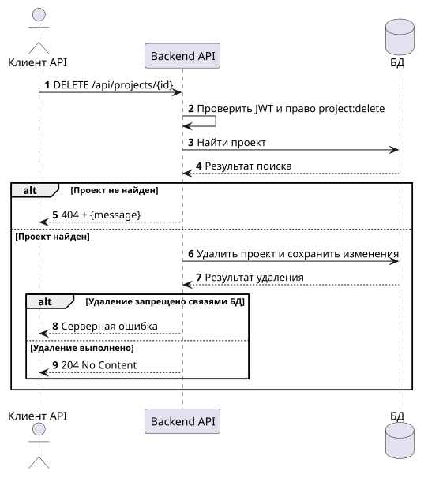

Удаляет проект из БД, если это допускают связи с другими данными.
Доступ: JWT и право project:delete.
Схема работы


Алгоритм
Проверить JWT и право
project:delete. Найти проект по идентификатору. Если проект не найден, вернуть404.Удалить проект через
Removeи сохранить изменения с помощьюSaveChanges. Предварительная очистка досок и связанных данных других модулей не выполняется.Если связи БД допускают удаление, удалить проект и вернуть
204без тела ответа. Участники проекта удаляются каскадно, а полеproject_idсвязанного устава получает значениеNULL.Если у проекта есть доски со связью
RESTRICT, БД отклоняет удаление. Контроллер не преобразует такую ошибку в предметный ответ400или409.
Входные параметры
Параметр пути (PATH). Тело запроса и QUERY-параметры отсутствуют.
Где | Поле | Тип | Обязательно | Описание |
|---|---|---|---|---|
PATH |
| integer | Да | Идентификатор проекта |
Ответ
204 No Content: проект успешно удален, тело ответа отсутствует.
Ошибки
Код | Причина | Ответ |
|---|---|---|
404 | Проект не найден |
|
Пример запроса
DELETE /api/projects/12